2a taken from homage to production. The single biggest change is resolution: every sprite is redrawn at 32×32 native and shown at 2×, so the tile is the same size on screen but carries four times the pixels. That's what buys grounded terrain texture, real mechanical detail on machines, and a player who is a person rather than a shape — without touching the crispness, the framing, the progress language or the conveyor.
The old tiles were built from motifs on a flat fill, which is what made them feel gamey. These are built the way a tileset is: a broad tonal mass first, then irregular patches, then detail, then noise. Nothing repeats on a visible rhythm, and dirt is new — it's the surface the outpost actually sits on, so built areas read as ground that has been worked.
The old nodes were stacks of geometric lumps. These are deposits: each one sits in a disturbed ground scar, so it looks embedded rather than dropped, and each is built on a different physical idea — sawn timber, fractured boulders, ore banded through a rock matrix, glossy coal seam, quartz with gold veining. Ore keeps its source ITEM_COLORS hue but now sits in grey rock, so the hue is the signal and the matrix is the contrast.
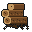
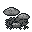
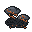
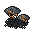
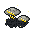
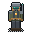
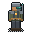
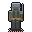
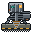
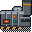
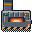
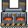
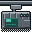
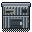
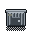
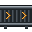
Kept from 2a and tightened: heavy outer frame, inner bevel, one amber accent. Progress bars gain segment ticks so partial production is countable at a glance rather than estimated, and status now rides the bar's colour plus a label — no colour-only states.
Dirt spreads where the outpost has been worked, so the base reads as a site rather than machines dropped on a lawn. Flow is unambiguous: the trunk line runs westward from the miner to the smelter — left-pointing chevrons, left-scrolling treads, ore travelling left — then turns north, carrying ingots up to the assembler on up-pointing chevrons. Power is computed from what's actually placed: 2 generators = 100 ⚡ against miner 5 + smelter 10 + steel 20 + assembler 15 + 11 belts = 61 ⚡, leaving +39.
Everything else in Relay Seven is untouched. These are the five corrections.